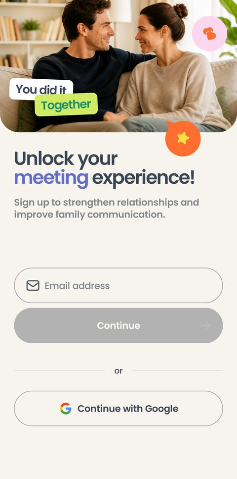
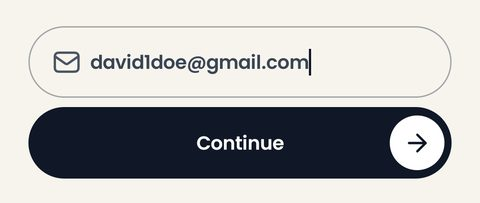
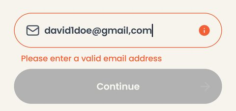
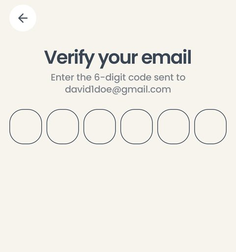
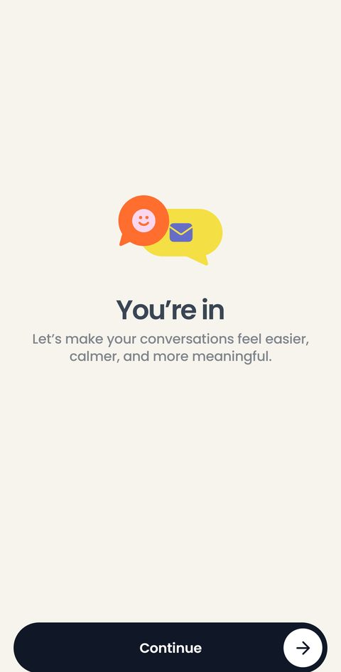
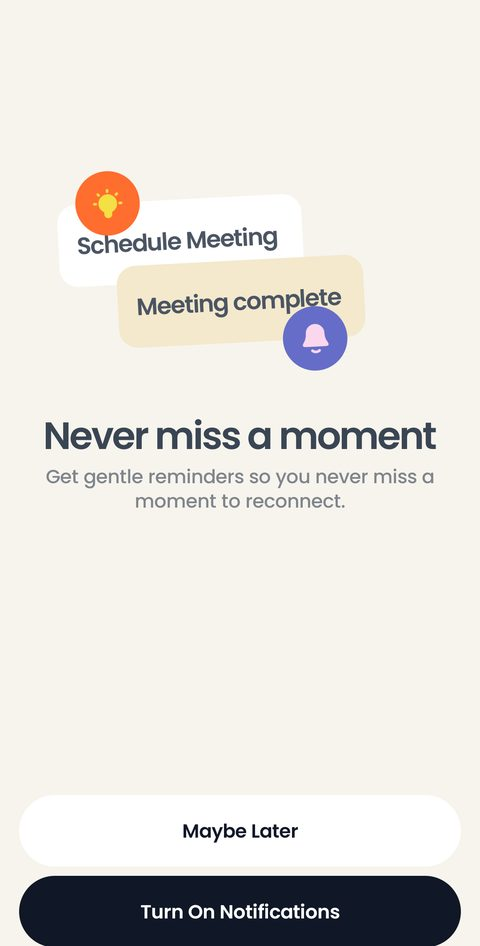
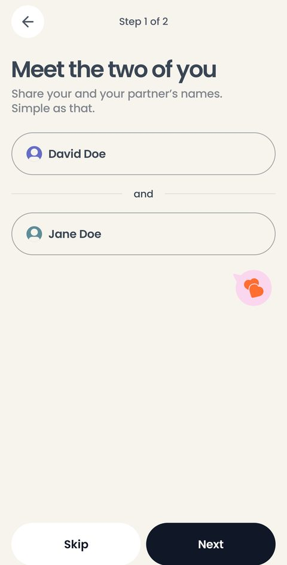
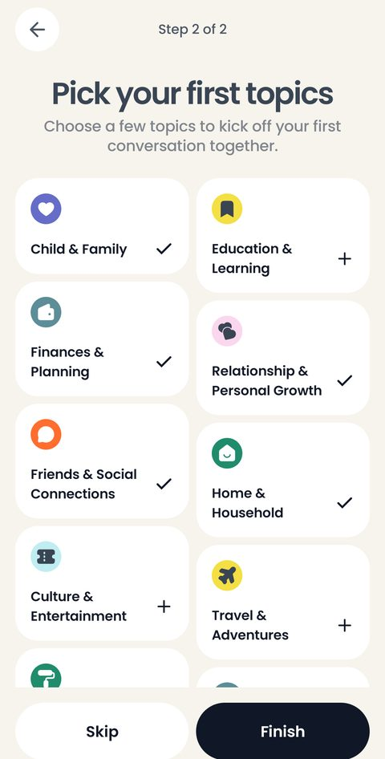
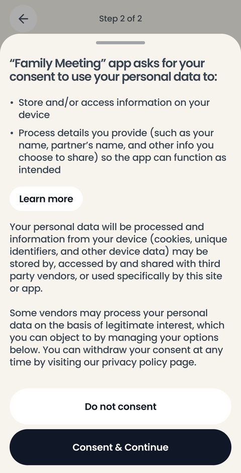

Девять экранов, которые пара видит один раз: как войти без пароля и как приложение спрашивает имена, темы, разрешение на уведомления и согласие на обработку данных. Дальше этих экранов не будет — все отметки о пройденном хранятся на телефоне.
Пароля в продукте нет вовсе: либо код из письма, либо аккаунт Google.

Первое, что видит человек после сплэша: фотография пары, заголовок Unlock your meeting experience!, поле Email address и кнопка Continue. Ниже, через «or», — Continue with Google.
Кнопки Apple здесь нет намеренно: у дизайнера отдельный андроидный кадр, и на нём только Google.
Под капотом: кнопка Continue погашена, пока в поле пусто. Google подключён нативно, через Credential Manager, — браузер не открывается. Одна и та же почта, введённая руками и пришедшая от Google, даёт одну учётную запись, а не две.

Как только в поле появляется текст, кнопка становится тёмной и работает. Это тот же экран auth, снятый крупно: сверка с макетом сравнивает здесь только полосу вокруг поля.
Под капотом: нажатие на Continue — это запрос к Supabase на отправку кода. Каждое нажатие считается на сервере, поэтому автопроверки его не жмут.

Запятая вместо точки — и поле краснеет, под ним появляется Please enter a valid email address, а кнопка гаснет обратно.
Под капотом: адрес проверяется на телефоне, до всякой сети. Сервер о таком письме даже не узнаёт.

Шесть ячеек под цифры, адрес получателя над ними и Resend Code, если письмо не пришло. Неверный код показывает ошибку и не пускает дальше.
Под капотом: письмо уходит через собственный SMTP, подключённый к Supabase, — со встроенным отправщиком в письме был бы не код, а ссылка на localhost. Длина кода выставлена в шесть цифр в настройках проекта; по умолчанию приходило восемь.

You're in — единственная задача экрана сказать, что почта подтверждена, и увести дальше, в онбординг.
Под капотом: с этого момента на телефоне лежит отметка владельца. Вход другим адресом стирает историю пары, вход тем же — оставляет её на месте, поэтому чужой человек не увидит чужие встречи. Сразу после входа приложение забирает с сервера копию истории этой учётной записи: на новом или очищенном телефоне встречи возвращаются сами.
Четыре экрана подряд, и каждый, кроме согласия, можно пропустить. Пропуск везде что-то значит.

Never miss a moment — свой экран-подводка перед системным запросом Android. Turn On Notifications вызывает системное окно, Maybe Later уводит дальше молча.
Под капотом: подводка нужна, потому что системное окно Android спрашивают один раз: отказ на нём уже не переспросишь, а разрешение потом включается только в настройках телефона. Отказ ничего не ломает — напоминания просто не приходят.

Два поля, соединённые словом «and», и шаг Step 1 of 2 наверху. Имена подставляются потом всюду: в карточки check-in, в итог встречи, в архив.
Skip разрешён — тогда пара называется Partner 1 и Partner 2, и имена можно вписать позже в настройках.
Под капотом: экран правки имён в настройках — тот же самый, дизайнер рисует их одинаково. Меняются только заголовок и кнопка.

Четырнадцать тем карточками в два столбца: галочка — тема включена, плюс — нет. Step 2 of 2, кнопки Skip и Finish.
Skip оставляет пять тем по умолчанию — те, что отмечены на этом экране заранее.
Под капотом: выбор ложится в базу на телефоне и потом живёт в настройках, в «Topics management». Отдельного списка «темы онбординга» нет — он один на всё приложение.

Шторка поднимается поверх выбора тем: что приложение хранит на устройстве, что обрабатывает и что может уйти сторонним вендорам. Пилюля Learn more открывает условия, кнопки — Do not consent и Consent & Continue.
Это единственный шаг, который нельзя пропустить.
Под капотом: при отказе приложение не закрывается — форма остаётся и объясняет, что без согласия дальше нельзя. Хранить всё локально «вместо согласия» не годится: спрашивают не про сервер, а про обработку данных вообще. Тон формулировок в этой шторке — наш; такие тексты обычно пишет юрист.
Перед встречей без единого имени поднимается предупреждение — missing_details. Оно предупреждает, но не запрещает.
Имена, темы, уведомления и согласие спрашиваются при первом запуске. Отметки лежат в настройках на телефоне, и повторно эти экраны не появятся.
Имена — в partners_edit, темы — в meeting_topics, напоминания — в meeting_preferences.